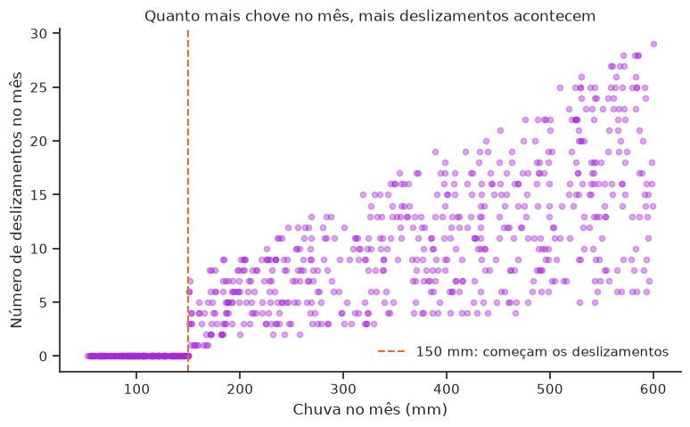
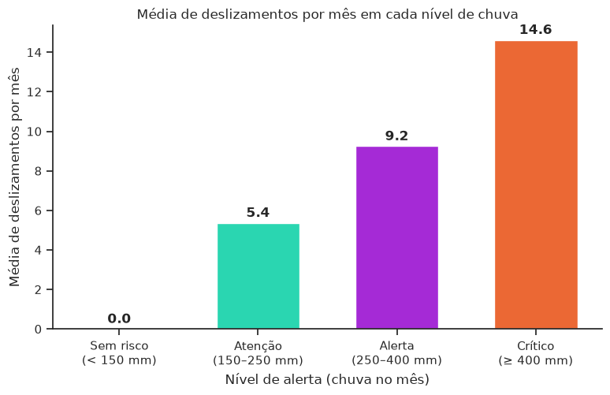
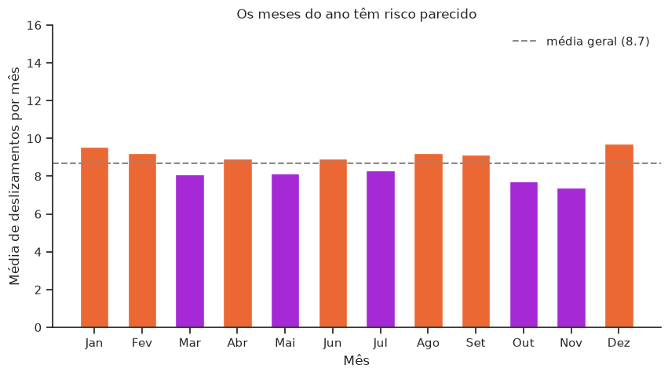
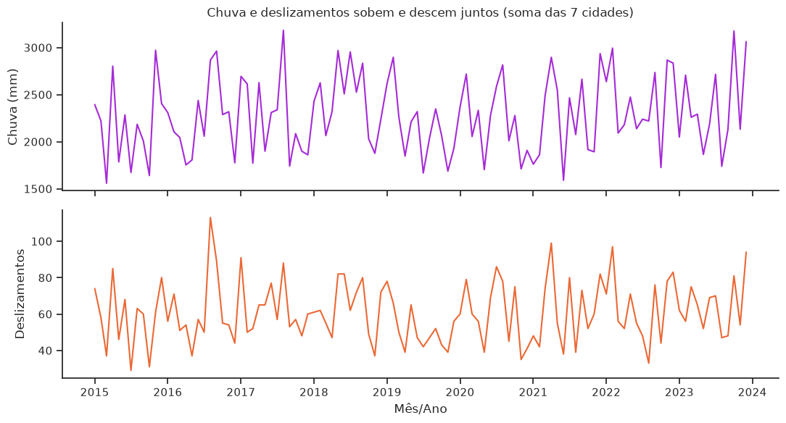
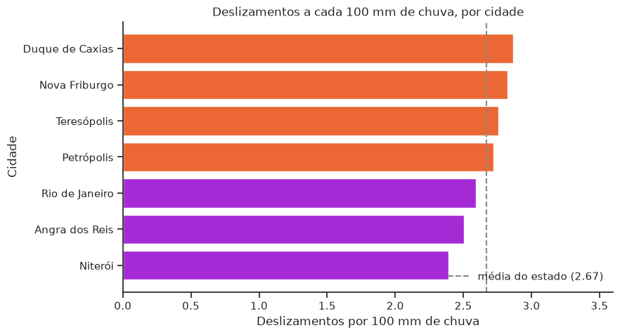

A pergunta
A partir de qual volume mensal de chuva os deslizamentos aumentam, e quais meses e cidades devem ser priorizados na prevenção?
Se existe um limite de chuva, ele vira um gatilho objetivo de alerta para a Defesa Civil. Se o risco se concentra em certas cidades, dá para decidir onde fazer obras de contenção primeiro.
Abaixo de 150 mm, nenhum deslizamento
Nenhum dos 158 meses com menos de 150 mm de chuva teve deslizamento. Todos os meses a partir de 150 mm tiveram. Cada ponto abaixo é uma cidade em um mês.

Os níveis de alerta
Acima do limite, o risco sobe em degraus. Os meses críticos são 38% do total, mas concentram 65% de todos os deslizamentos.

| Nível | Chuva no mês | Média de deslizamentos |
|---|---|---|
| Sem risco | < 150 mm | 0,0 |
| Atenção | 150–250 mm | 5,4 |
| Alerta | 250–400 mm | 9,2 |
| Crítico | ≥ 400 mm | 14,6 |
O mês do ano importa pouco
Com a mesma escala do gráfico de níveis, os meses do calendário ficam todos entre 7 e 10 deslizamentos. A diferença entre o pior e o melhor mês é de ~2,3; entre as faixas de chuva, chega a 14,6. Planejar a prevenção só pelo verão deixaria meses de risco descobertos.


Onde agir primeiro
Duque de Caxias e Nova Friburgo têm mais deslizamentos a cada 100 mm de chuva. Junto com Teresópolis e Petrópolis, ficam acima da média do estado.

Conclusão
O risco de deslizamento depende de quanto chove, não da época do ano. Acima de 150 mm no mês os deslizamentos começam, e acima de 400 mm acontecem dois terços de todas as ocorrências.
Ações recomendadas: alerta automático por chuva acumulada (150 / 250 / 400 mm) funcionando o ano todo, e obras de contenção começando por Duque de Caxias e Nova Friburgo.
Os dados são simulados e mensais. O limite exato de 150 mm é provavelmente mais limpo do que seria com registros reais, e chuva concentrada em poucos dias não aparece no total do mês.
Tecnologias e funcionalidades
| Tecnologia | Uso no projeto |
|---|---|
| Python + Pandas | Limpeza, engenharia de atributos (data, faixas de chuva) e KPIs |
| Requests | Download da base direto do GitHub do professor, sem upload manual |
| Matplotlib + Seaborn | Dispersão, barras, histograma, séries temporais e heatmap |
| SQLAlchemy + SQLite | Base tratada gravada em database/ e consultada com SQL |
| Streamlit | Dashboard com 4 filtros, KPIs dinâmicos, 7 seções e simulador de alerta |
| GitHub + GitHub Pages | Código-fonte e esta página |
Funcionalidades avançadas: correlação estatística (Pandas), persistência em banco (SQLAlchemy + SQLite) e consumo da base via Requests.